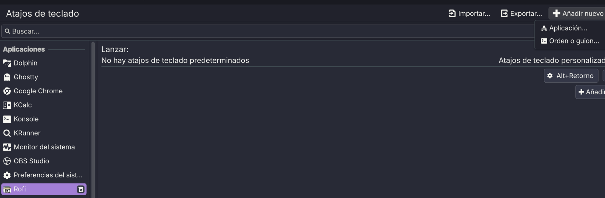

1. Objetivo del proyecto
El proyecto conserva Rofi como motor de búsqueda de aplicaciones y modifica su presentación para recrear una experiencia visual de tipo Walker dentro de KDE Plasma 6 + Wayland. La meta es un launcher compacto con una columna de ilustración a la izquierda, buscador y aplicaciones a la derecha, selección violeta y tipografía monoespaciada.
2. Inspiración y créditos
La inspiración principal de este proyecto proviene del contenido de Graplo en YouTube. En su escritorio, Graplo utiliza Walker como lanzador y presenta una composición con imagen vertical a la izquierda, campo de búsqueda y lista compacta de aplicaciones. Esa presentación fue el punto de partida para investigar cómo reflejar una experiencia similar utilizando Rofi.
LoboViejo79 Rofi Walker Style es una implementación independiente. No es un fork de Walker ni está afiliada con Graplo. El objetivo del proyecto es reinterpretar esa idea en Rofi y facilitar su uso principalmente en KDE Plasma 6 + Wayland, conservando al mismo tiempo compatibilidad con otras sesiones donde Rofi funcione correctamente.
3. Resultado final
4. Arquitectura
Rofi
├── modo drun
├── iconos de aplicaciones
├── tema RASI
│ ├── panel izquierdo
│ ├── icon-wallpaper
│ ├── Search
│ └── listview
└── loboviejo79-launcher.sh
├── busca imágenes
├── selecciona una con shuf
└── inyecta filename mediante -theme-str
La imagen se implementa como un widget icon-wallpaper y no como background-image. Esto evita el efecto mosaico observado en las primeras pruebas.
5. Requisitos y compatibilidad
| Componente | Uso |
|---|---|
| Rofi | Launcher y motor drun. |
| findutils | Busca imágenes dentro del directorio. |
| coreutils | Proporciona shuf para selección aleatoria. |
| JetBrainsMono Nerd Font | Tipografía del tema. |
| fontconfig | Actualiza y consulta la caché de fuentes. |
| curl + xz | Descarga y extracción automática de la Nerd Font. |
6. Instalación automática
unzip LoboViejo79-Rofi-Walker.zip cd LoboViejo79-Rofi-Walker
chmod +x install.sh ./install.sh
cp /ruta/a/tus/imagenes/* ~/.config/rofi/walker-images/
~/.config/rofi/scripts/loboviejo79-launcher.sh
Qué hace install.sh
Detecta la familia de distribución usando /etc/os-release y el gestor disponible. Instala Rofi y dependencias, descarga JetBrainsMono Nerd Font si hace falta, crea backups de una instalación LoboViejo79 previa, copia el tema, copia el launcher y crea una entrada .desktop.
| Familia | Comando usado |
|---|---|
| Arch y derivados | pacman -S --needed rofi ... |
| Debian/Ubuntu y derivados | apt-get install rofi ... |
| Fedora y derivados | dnf install rofi ... |
7. Instalación manual
Si no se desea usar el instalador, la estructura necesaria es:
~/.config/rofi/
├── themes/
│ └── loboviejo79-walker.rasi
├── scripts/
│ └── loboviejo79-launcher.sh
└── walker-images/
├── 01.jpg
├── 02.png
└── ...
Después:
chmod +x ~/.config/rofi/scripts/loboviejo79-launcher.sh ~/.config/rofi/scripts/loboviejo79-launcher.sh
8. Preparación de imágenes
La resolución recomendada es 1080×1600 px, orientación vertical y relación 2:3. El script admite PNG, JPG/JPEG y WEBP.
walker-images/ del repositorio a ~/.config/rofi/walker-images/ durante la instalación.Directorio de imágenes del repositorio
Para incluir imágenes de ejemplo o un conjunto propio, colocá tus archivos en:
walker-images/
El instalador copiará todos los archivos válidos desde ese directorio al entorno del usuario, preservando subcarpetas.
Directorio de imágenes instalado
El launcher usa:
~/.config/rofi/walker-images/
Si querés agregar más imágenes después de la instalación, solo copiá nuevos archivos PNG/JPG/JPEG/WEBP a ese directorio.

Galería
La siguiente vista ilustra cómo el launcher muestra las imágenes verticales dentro del panel izquierdo y la experiencia visual general con el tema activado.
Cada apertura ejecuta find + shuf -n 1 para seleccionar una imagen aleatoria.
9. Crear el atajo en KDE Plasma
Usar como comando la ruta absoluta:
/home/TU_USUARIO/.config/rofi/scripts/loboviejo79-launcher.sh
Un atajo práctico es Meta + Espacio. Si ya está ocupado, KDE solicitará reasignarlo. Se recomienda no usar ~ en este campo y guardar la ruta completa.
10. Tema, colores y geometría
| Variable | Color | Uso |
|---|---|---|
| bg | #282a36 | Fondo principal Dracula. |
| bg-alt | #303341 | Panel lateral. |
| bg-input | #343746 | Search. |
| fg | #f8f8f2 | Texto. |
| purple | #bd93f9 | Borde y selección. |
| cyan | #8be9fd | Color auxiliar. |
| pink | #ff79c6 | Color auxiliar. |
| green | #50fa7b | Color auxiliar. |
La ventana final usa 545×395 px, columna izquierda de 165 px y panel derecho de 380 px. La barra Search utiliza padding: 9px 12px, modificación que produjo el grosor final elegido.
11. Funcionamiento del launcher
El script valida que Rofi exista, comprueba el tema y el directorio de imágenes, escoge un archivo aleatorio y ejecuta:
rofi \
-show drun \
-show-icons \
-theme "$THEME" \
-theme-str "icon-wallpaper { filename: \"$ROFI_IMAGE\"; }"
El uso de filename en el widget icon evita que la imagen se repita. En las primeras pruebas se utilizó background-image, que produjo mosaico; después se corrigió la arquitectura.
12. Diagnóstico
El proyecto incluye:
./check.sh
Muestra distribución, sesión gráfica, versión de Rofi, existencia del tema y launcher, fuente detectada y cantidad de imágenes.
13. Solución de problemas
Permiso denegado
chmod +x ~/.config/rofi/scripts/loboviejo79-launcher.sh
No aparecen imágenes
find ~/.config/rofi/walker-images -maxdepth 1 -type f
Verificar que sean PNG, JPG, JPEG o WEBP.
La imagen aparece diminuta
Comprobar que el tema instalado sea la versión incluida en este paquete, donde icon-wallpaper tiene size: 385px y expand: true.
La imagen se repite
No usar background-image. La versión final usa icon-wallpaper { filename: ...; }.
El atajo de KDE no abre
Usar la ruta absoluta, comprobar permiso de ejecución y lanzar el script manualmente desde una terminal para ver errores.
14. Desinstalación
./uninstall.sh
El desinstalador elimina el tema, launcher y entrada de aplicación del proyecto, pero conserva Rofi, las imágenes personales y los backups.
Para quitar también la Nerd Font local:
./uninstall.sh --remove-font
15. Preparar el repositorio para GitHub
El ZIP ya contiene una estructura apta para repositorio. Se recomienda:
git init git add . git commit -m "Initial release: LoboViejo79 Rofi Walker Style" git branch -M main git remote add origin URL_DEL_REPOSITORIO git push -u origin main
Directorio `walker-images/`
Para mantener el repositorio limpio, podés dejar `walker-images/` con solo `README.txt` y `.gitkeep`. Si querés incluir imágenes, agregá únicamente archivos que tengas derecho a distribuir.
Durante la instalación, el instalador copiará las imágenes del directorio del repositorio a ~/.config/rofi/walker-images/.
walker-images/ puede permanecer vacío; cada usuario puede agregar sus propias imágenes después de instalar.16. Fuentes técnicas y créditos
- Graplo — canal de YouTube: inspiración visual original del proyecto y del concepto Walker reinterpretado aquí en Rofi.
- Documentación oficial de Rofi
- Paquete Rofi — Arch Linux
- Paquete Rofi — Debian
- Paquete Rofi — Fedora
- Nerd Fonts — repositorio oficial
La parte visual y conceptual reconoce expresamente a Graplo como fuente de inspiración. La implementación, scripts, tema RASI, instalador y documentación de este repositorio corresponden al proyecto LoboViejo79.